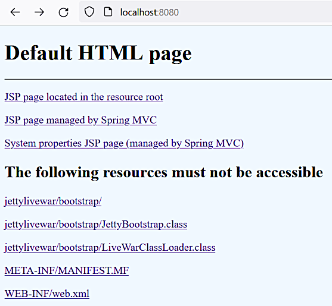

Embedded server
Embedded server
Embedded server
May 7, 2023
This section is intended for discussion on different ways of embedded server setup with Spring MVC.
The topic doesn't look to be simple and straightforward. There are quite many materials on the Internet but they all probably cover the simplest use cases and contain very little or no descriptions and explanations. Some of the materials are listed in [23] and [20].
Here some certain setups are going to be implemented and explored.
This implementation is made based on the material [20.1]. The project is declared as being for
investigation purpose. It uses custom class loader, maven-dependency-plugin and probably some
other solutions that make it unstable and add problems when using in production.
The following features were added:
Also see the StackOverflow question "How to enable JSP in a Jetty server in a JAR file?", this answer.
The project may be built and run:
Build directory is changed in the projects to move the generated artifacts out of the study notes directory:
...
<build>
<directory>${TMP_MAVEN_BUILDS_DIR}${project.parent.artifactId}/${project.artifactId}</directory>
...This instructions were used.
Git commit:
234605b0cbf55d1dc956b1ee06843bb72abeb7eaembedded jetty: life war - before embedding
Further modifications and improvements are going to be done in the next subsections.
Just execute mvn clean package to build the project. Also see
here for instructions on deployment and
running.
Just multi module structure created. Live WAR elements will be added later.
Git commit:
65666bbcaa8ee2a849ae57eba44dea629a3f7eb3web application converted into a module
Executing mvn clean package for the parent project will generate the WAR file my-webapp.war
the same way as in the previous version.
Git commit:
6050a18e8235df32b09f73b75b5b76160434db0clive WAR implementedGit commit:
c12f1479711095c55db1d715ed7177c86445a333life WAR small change
The following are the Maven modules described:
my-webapp — the standard web application that is packaged as a WAR file.jetty_server — the Jetty server that runs the above web application. It's also used for
for running the web application from inside an IDE (only IntelliJ IDEA was tested).server_bootstrap — the module that starts the server from inside the live WAR file.livewar_assembly — the module that uses the other modules and generates the final
live WAR file.The build is done by executing mvn clean package for the parent project.
The generated artifact is the file my-webapp-livewar.war.
Also see here for instructions on deployment and running.
Running as a JAR file is done the following way:
>java -jar livewar_assembly\my-webapp-livewar.war
...
2023-05-10 13:41:51.825:INFO:oejs.Server:main: Started @4803msIn IntelliJ IDEA the class jettylivewar.starter.ServerMain from the project jetty_server
may be used for running and debugging the project.
Remote debugging may be done using the instructions
here. Some additional output is added when
the option -Ddebug=true is used.
The main page is accessible at http://localhost:8080/:

Adding Spring MVC
In the my-webapp module Spring MVC is added by adding the configuration classes
MyApplicationInitializer and MyApplicationConfig and the controller class HelloController.
There are some detailed explanations here. When run in a servlet
container this configuration is found automatically.
In the jetty_server module the following class list adjustment is used in the class
ServerMain:
...
Configuration.ClassList classlist = Configuration.ClassList
.setServerDefault(server);
classlist.addBefore(
"org.eclipse.jetty.webapp.JettyWebXmlConfiguration",
"org.eclipse.jetty.annotations.AnnotationConfiguration");
...When the WAR file is run in the Jetty servlet container, JSP support is done externally by the
Jetty's jsp module (also see here).
No other actions required inside the standard WAR file.
In the live WAR artifact when running standalone, the
above adjustments are required.
Also there's a special procedure enableEmbeddedJspSupport() in the helper class
JspSupportEnablingHelper
that is called from the ServerMain class and fulfills all the adjustments.
Security adjustments
The demonstrated adjustments just cover the obvious breach caused by the dual nature of the
generated WAR file that also works as an executable JAR. The server bootstrap classes in the
directory jettylivewar are by default accessible to the web clients. The solution was made
to forbid this directory using <security-constraint> tag in the file web.xml.
<?xml version="1.0" encoding="UTF-8"?>
<web-app xmlns="http://xmlns.jcp.org/xml/ns/javaee"
xmlns:xsi="http://www.w3.org/2001/XMLSchema-instance"
xsi:schemaLocation="http://xmlns.jcp.org/xml/ns/javaee
http://xmlns.jcp.org/xml/ns/javaee/web-app_3_1.xsd"
version="3.1">
<context-param>
<param-name>org.eclipse.jetty.servlet.Default.dirAllowed</param-name>
<param-value>false</param-value>
</context-param>
<security-constraint>
<web-resource-collection>
<web-resource-name>Restricted folders</web-resource-name>
<url-pattern>/jettylivewar/*</url-pattern>
<url-pattern>/META-INF/*</url-pattern>
<url-pattern>/WEB-INF/*</url-pattern>
</web-resource-collection>
<auth-constraint />
</security-constraint>
</web-app>
Also directory listing was disabled using the parameter dirAllowed.
There's also an alternative solution by setting equivalent restrictions programmatically —
see the method applyRestrictions() in the ServerMain class. This solution is preserved in
the code for information purpose but it cannot be used in this project because the live WAR
file may also be called as a regular WAR file. So the possible solutions may be:
web.xml configuration (the accepted option).Also see this related topic.
The following attempt was done to create an executable JAR with embedded Jetty server and JSP support. This result was achieved but only when the project is run in the IntelliJ Idea IDE. When run inside a package it doesn't work.
Git commit:
3944bb1851bdffd9f40e525e4f8abd573bc7c66cEmbedded Jetty WARless packaging implemented (incomplete)
Navigate to
The main difference between the IDE and self contained versions is probably in the following
setting (class Main):
...
webAppContext.setExtraClasspath(appClasspath);
...Inside the IDE the value is like file:/X:/path/to/jetty-embedded-warless/classes/, but when
running as the executable JAR it's like
file:/X:/path/to/jetty-embedded-warless/jetty-embedded-warless-1.0-SNAPSHOT.jar.
So in the latter case much more classes fall into the initialization scope. The problem may probably be solved by restricting the web application context class path, but a method for this was not found yet.
The answer to the StackOverflow question jetty embedded jsp issues may be notable for understanding the perspectives:
You have to setup JSP for Jetty, the mere existence of the JARs is insufficient.
...
Finally, some things you need to consider with JSP/JSTL/EL support:
- Don't bundle up in OSGi (the JSTL/EL/Standard libraries do not support this usage. mainly due to classloader expectations)
- Don't use Java 9+ JPMS modules (the JSTL/EL/Standard libraries do not support this usage, mainly due to classloader expectations, and resource url expecations)
- Don't create an uber jar (the JSTL/EL/Standard libraries do not support this)
- Don't repackage the JSTL jars in any way, they need to stay as the JSTL/EL/Standard jars, available on the filesystem.
- Don't create custom classloaders. (The JSTL/EL/Standard libraries expect a very narrow definition of a Classloader)
Conclusions
@ResponseBody or REST.